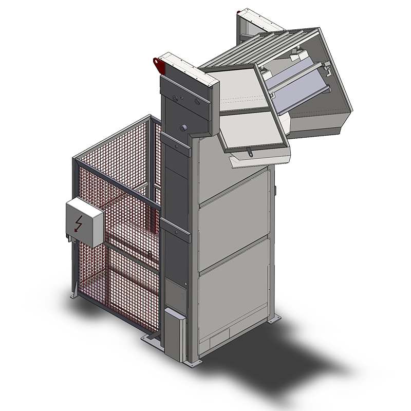

Hub-Kistenkippgerät

Je nach Kistengrößen des Kunden wird das Kistenkippgerät speziell angepasst. Die Kisten werden durch den Anwender im Kistenkippgerät platziert. Nach Aktivierung (optional Funk) fährt die Hebeeinheit automatisch nach oben. Die Kistenhalteplatte kann verstellt werden, sodass der Produktstrom bereits beim Kippen reguliert werden kann. Wurde ein Teil der Ware entleert, erkennt ein Sensor die bereits entleerte Menge und stoppt den Kippprozess. Wurde genügend Ware abtransportiert, erfolgt die erneute Drehung der Kiste. Dieser Vorgang wiederholt sich, bis die Kiste komplett entleert ist. Mit der Hubeinrichtung kann bei geringem Platzbedarf bei der Warenannahme bereits eine große Höhe überwunden werden.
- hydraulisches Schwenksystem
- definierbare Hubhöhe
- mit Sicherungsgitter und optionaler Lichtschrankensteuerung